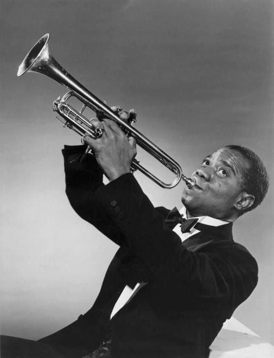
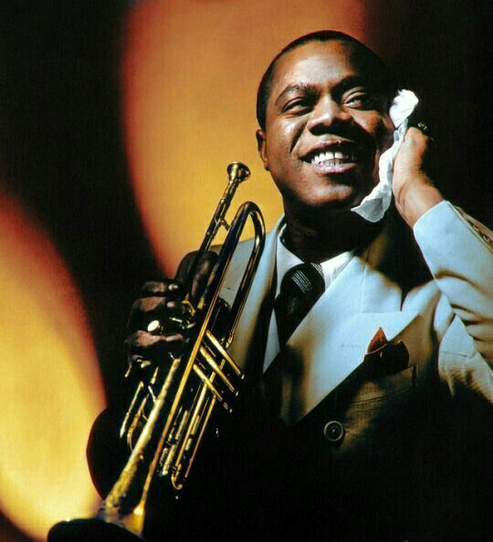
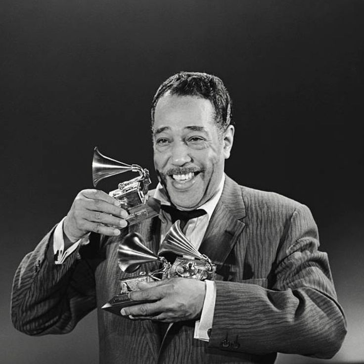
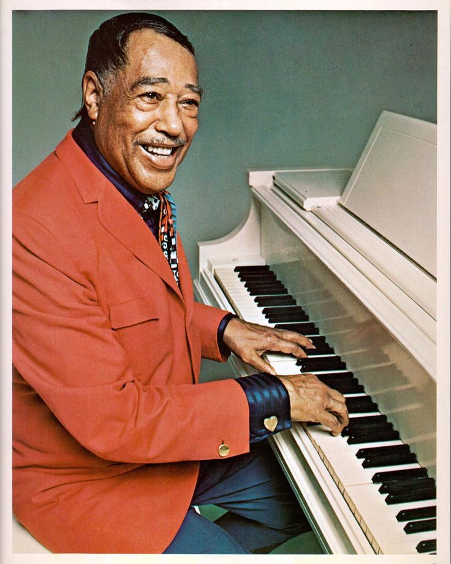

Jazz
Jazz developed in New Orleans in the early 20th century as a unique fusion of African American musical traditions and European harmonic structures. What makes jazz distinctive is its emphasis on improvisation, where musicians create spontaneous melodies and solos over established chord progressions. This improvisational element makes each jazz performance unique, as musicians respond to each other in real-time, creating music that has never been heard before and will never be heard again in exactly the same way. The harmonic sophistication of jazz sets it apart from most other popular music genres. Jazz musicians use complex chord progressions, extended harmonies, and sophisticated scales that create rich, colorful sounds. These harmonic complexities provide the foundation for improvisation, giving musicians a structured framework within which to explore creative possibilities. The relationship between composition and improvisation in jazz creates a unique balance between structure and freedom.
Most famous Jazz singers or bands
Louis Armstrong
Louis Armstrong (1901-1971) A foundational figure in jazz, Armstrong was a trumpeter, vocalist, and entertainer who helped transform jazz from a regional folk music into a sophisticated art form. His innovative trumpet playing, distinctive gravelly voice, and charismatic personality made him one of the first African American entertainers to achieve mainstream success across racial lines.


Duke Ellington
Duke Ellington (1899-1974) Born Edward Kennedy Ellington, he was a jazz composer, pianist, and bandleader who led his orchestra for nearly 50 years. He composed thousands of songs and is considered one of the greatest jazz composers. His sophisticated arrangements and compositions like "Take Five" and "In a Sentimental Mood" elevated jazz to high art.

